本地阅读版，依据出版社提交至PMC的原始JATS XML整理，供核对正文、图注、表格和原图。原始main.xml完整保留；此页不是出版社版式PDF。所有数字与正文冲突均保留原文，未修正或推算。实验准入状态见逐篇审核表。
This study explores the sustainable production of high-performance supercapacitor electrodes from waste mango kernels, addressing the growing need for eco-friendly energy storage solutions. Porous carbon materials were synthesized via pyrolysis at varying temperatures (700, 800, 900, and 1000 °C), designated as MK7, MK8, MK9, and MK10, respectively. The synthesized carbon was obtained via a simple and eco-friendly carbonization, yielding a highly porous structure with a large specific surface area of 1348.9 m2 g−1, for MK9 material as confirmed by BET analysis. Raman spectroscopy revealed a high degree of graphitization with D and G bands, indicating the presence of both disordered and graphitic carbon domains. SEM imaging showed a well-developed, interconnected porous morphology, while XRD patterns confirmed the amorphous nature with partially crystalline domains. The resulting carbon materials were evaluated for their electrochemical performance in supercapacitor applications. Electrochemical characterization revealed that the MK9 sample, pyrolyzed at 900 °C, exhibited the highest specific capacitance of 205.8 F g−1, surpassing the performance of the other samples. To optimize device performance, symmetric supercapacitors were fabricated using a CR2032 coin cell configuration with different electrolytes and concentrations. The KOH electrolyte device demonstrated a maximum power density of 5137.86 W kg−1, an energy density of 12.32 W h kg−1, and a specific capacitance of 112.4 F g−1. Furthermore, this device exhibited excellent cycling stability, maintaining its performance over 100 000 galvanostatic charge–discharge cycles. A practical demonstration showed the ability of the device to power a red LED for approximately 15 minutes. These results highlight the potential of utilizing waste biomass, specifically mango kernels, for sustainable and efficient supercapacitor development.
This study explores the sustainable production of high-performance supercapacitor electrodes from waste mango kernels, addressing the growing need for eco-friendly energy storage solutions.
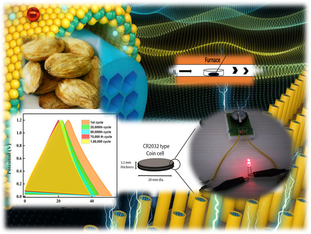
Growing energy demands and environmental challenges necessitate developing sustainable, high-performance energy storage solutions. Supercapacitors offer a promising alternative due to their advantages, including fast charge–discharge capabilities, high power density, extended cycle life, and environmentally benign nature.1,2 However, the difficulty in producing high-performance electrode materials that are both cost-effective and sustainable impedes the broader implementation of supercapacitors. As a result, reusing bio-waste in applications that store electricity is desirable as a waste management and environmental protection strategy.3 Traditional energy storage predominantly relies on fuel cells, batteries, and capacitors. However, to address the growing demand for clean energy, a more integrated approach combining energy storage and conversion systems, such as batteries, supercapacitors, fuel cells, and solar cells, is essential.4 Due to their excellent rate capability, remarkable stability, rapid charge/discharge process, high power density, and long cycle life,5,6 supercapacitors, also called electrochemical double-layered capacitors, or EDLCs, have drawn much attention recently.
Compared to other carbonaceous precursors, biomass can be easily turned into carbon.7 It is a naturally occurring resource that is abundant on earth, recyclable, and has a very permeable structure. Porous carbon compounds are known for their high surface area and conductivity, making them ideal for supercapacitor electrodes.8 Porous carbons are commercially produced from petroleum by-products using either templated or non-templated methods. Materials such as siliceous sources, clays, zeolites, and other inorganic substances have been employed as templates.9–12 The non-templated approach generates hierarchical porous carbons with topological structures similar to those obtained through template-based methods but at a lower cost and in a single-step process.13 Carbon materials synthesized from agricultural waste biomass are increasingly attracting attention for supercapacitor applications because of their high surface area and hierarchical porosity, which make them highly suitable for efficient energy storage. Biomass or biowaste materials like garlic peel,13 onion peel,14 banana peel,15Caesalpinia sappan pods,16Arachis hypogaea skin,17Lablab purpureus seeds,18 orange peel,19 oil palm leaves20 and walnut shell,21etc. have been utilized as carbon precursors, offering an efficient approach to convert biomass waste into valuable products. However, there are no reports of using mango kernels for the same.
Mango (Mangifera indica) is a prominent tropical fruit crop primarily cultivated for its edible pulp. The seed, accounting for 20–60% of the fruit's total weight, is often discarded in mango-producing regions due to its minimal culinary and commercial applications. With limited utilization globally, mango kernels represent an underexplored resource, with an estimated 18 to 22 million tonnes generated annually.22 Mango by-products present significant environmental and economic concerns for the food industry and the broader community. Globally, approximately 123 000 metric tonnes of mango seeds are discarded annually, adding to the waste generated by the fruit processing sector. The seed accounts for 20–60% of the total fruit mass, with the kernel comprising 45–75% of the seed weight.3,23,24 During mango fruit processing, approximately 40–60% of the waste generated primarily consists of mango kernels. Its lignocellulosic structure comprises approximately 25.2% cellulose, 34.06% hemicellulose, and 15.0% lignin.25 Considering its abundance and underutilization, we identified mango kernels as a viable precursor for synthesizing porous carbon nanomaterials (PCNs). Despite the potential of biomass-derived carbon materials, research on mango seed-derived porous carbon for supercapacitors is rare.
This work used a simple, one-step, non-activated carbonization process to create porous hard carbon from biowaste mango kernel. Different carbonization temperatures ranging from 700 °C (MK7) to 1000 °C (MK10) were employed to examine the electrochemical performance and physicochemical characteristics. Porous carbon from mango kernels were used for the first time in a supercapacitor application to assess electrochemical performance. This offers a sustainable approach to waste management while contributing to advancements in renewable energy storage technology. Symmetric CR2032-type supercapacitors were fabricated using various electrolytes (Fig. 1), and their energy performance was compared with previously reported studies, demonstrating superior results. Therefore, the main objective of this study is to develop a sustainable, high-performance porous carbon material derived from mango kernel waste for use as an efficient electrode in supercapacitors, focusing on optimizing its structural properties, electrochemical performance, and long-term cycling stability.
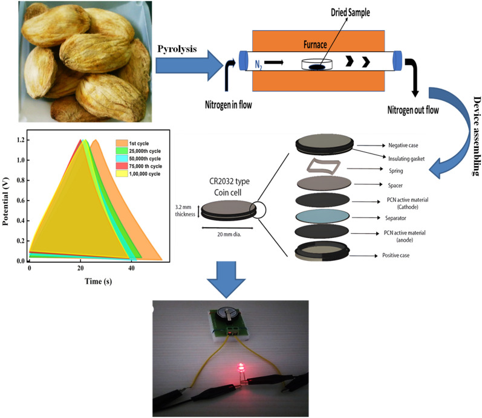
The biomass-derived carbon materials have been widely studied, but the use of mango kernels (a highly abundant yet underutilized agro-waste) as a precursor for porous carbon in supercapacitor electrodes remains significantly unexplored. Despite the huge generation of mango seed waste (∼123 000 metric tons), there are no prior reports on utilizing mango kernels specifically for porous carbon synthesis in energy storage applications. In addition, several studies employ chemical activation to enhance porosity, while the present study demonstrates that a simple, controlled thermal pyrolysis of mango kernels under N2 atmosphere is sufficient to generate a high surface area with excellent specific capacitance. This proves that activation is not always essential when the precursor itself (with high lignocellulosic content) naturally provides hierarchical porosity upon thermal treatment. Moreover, by avoiding activating agents, we reduce environmental processing complexity.
The dried Mangifera indica kernels were powdered and sieved through a 60 μm mesh. The obtained fine powder of the precursor was then subjected to slow pyrolysis, with a heating rate of 10 °C min−1 and a cooling rate of 2 °C min−1 under N2 atmosphere. The pyrolysis was carried out at elevated temperatures of 700, 800, 900, and 1000 °C without any activating agents. The obtained porous carbon was labelled MK7, MK8, MK9, and MK10, respectively.
A working electrode was fabricated by uniformly coating pre-cleaned nickel foam with a mixture of MK, PVDF binder, and carbon black conductive additive in a 90 : 5 : 5 weight ratio, respectively, using N-methyl-2-pyrrolidone (NMP) as the solvent. The coated electrode was pressed under the pressure of 100 kg cm−2 and dried overnight at 80 °C, yielding a working electrode with an active material loading for the three-electrode system of 2.3, 2.0, 2.61, and 2.73 mg for MK7, MK8, MK9, and MK10, respectively. Electrochemical characterization was carried out in a three-electrode configuration using 3 M KOH as the electrolyte. A saturated calomel electrode (SCE) and a platinum wire were employed as the reference and counter electrodes, respectively. All electrochemical measurements were performed using an AUTOLAB M204 potentiostat/galvanostat equipped with a frequency response analyzer (FRA).
Electrochemical analysis included cyclic voltammetry (CV) at scan rates of 10 to 100 mV s−1 within a potential range of −1.0 to 0 V versus SCE, galvanostatic charge–discharge (GCD) measurements at current densities from 0.1 to 1.0 Ag−1, and electrochemical impedance spectroscopy (EIS) performed across a frequency range of 100 kHz to 0.01 Hz with a 10 mV AC signal at the open circuit potential.
A symmetrical supercapacitor was constructed by coating 2.5 mg of active material onto each of two identical electrodes, separated by a 3.0 M KOH-soaked Whatman glass microfiber filter membrane. The assembled CR2032 coin cell, with a total active material loading of approximately 5 mg, was compressed at 1000 PSI. The symmetrical supercapacitor was then electrochemically characterized under conditions similar to the three-electrode setup. The device assembly is illustrated in Fig. 2.
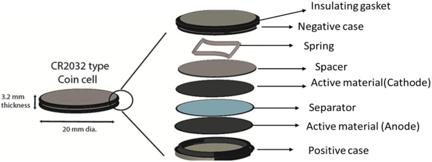
The morphology and structure of the pyrolyzed carbon were characterized by FESEM-EDS (SEM, Apreo, Thermo Fisher Scientific, India). XRD (Rigaku Model: Smart lab X-ray Diffractometer) was performed from 10° to 80° to determine the crystallinity of the synthesized material. BET and t-plot analysis (BELSORP-max, Microtrac, Japan) measured surface area, pore size, and pore volume. The electrochemical investigation of the synthesized porous carbon was studied in (Metrohm AUTOLAB M204, Netherlands) multichannel electrochemical workstation.
The surface area of the porous carbon synthesized (MK7, MK8, MK9, and MK10) was better understood by the N2 Adsorption–desorption isotherm experiment carried out at 77 K, as given in Fig. 3a–e. Except for MK7, all the isotherms exhibit type IVa characteristics, indicating capillary condensation followed by hysteresis. This behavior occurs when pore widths exceed a critical size, which depends on the adsorption mechanism and temperature. The porous carbon ranging from 78 to 710 displays H4-type hysteresis loops. These H4 loops are relatively consistent, with the adsorption branch showing a combination of type I and type II features, primarily due to micropore filling at low p/p0 values. This suggests that MK7 materials possess a hierarchical porous structure.
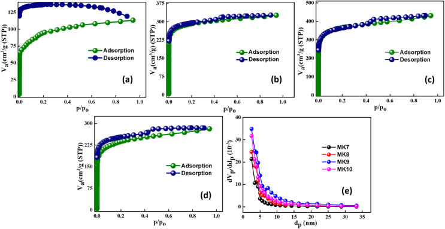
According to the BET model, MK9 exhibits the highest specific surface area (SSA) of 1348.5 m2 g−1. The SSA, pore volume, and pore size for all samples are presented in Table 1, showing a uniform pore size of around 2 nm. Pore size distribution curves (Fig. 3e) further confirm significant gas adsorption in the extensive micropore/small mesopore range, with MK9 showing the highest adsorption, correlating with its larger surface area. At 900 °C, the balance between volatile removal and pore structure formation maximizes the surface area. However, at 1000 °C, excessive heat leads to sintering, graphitization, and partial pore collapse, reducing the surface area.
| Carbon material | BET specific surface area (m2 g−1) | Total pore volume (cm3 g−1) | Mean pore diameter (nm) |
|---|---|---|---|
| MK7 | 330.3 | 0.18 | 2.1 |
| MK8 | 1090.2 | 0.5 | 1.9 |
| MK9 | 1348.5 | 0.67 | 1.9 |
| MK10 | 850.4 | 0.43 | 2.0 |
Scanning electron microscopy (SEM) images of the mango kernel-derived carbon samples pyrolyzed at different temperatures (700 °C to 1000 °C) reveal significant morphological evolution with increasing temperature, as shown in Fig. 4a–h. At 700 °C, the carbon material exhibits a relatively smooth surface with limited pore development and shows a sphere-like structure. As the pyrolysis temperature increases to 1000 °C, the surface becomes more porous and rougher, with visible development of micro- and mesopores due to enhanced volatile release and partial structural breakdown. At 1000 °C, the carbon structure shows a well-developed nanosphere, suggesting more extensive decomposition and carbonization. The average diameter of the sphere is nearly 50 nm. This temperature-dependent morphological change directly contributes to improved surface area and ion-accessible sites, which are used for enhanced electrochemical performance in supercapacitor applications. EDS analysis (Fig. 4h inset) confirms a dominant carbon content of 84.86%, along with 10.9% of oxygen and trace amounts of Mg (0.76%), P (1.18%), and K (2.31%) from the biomass precursor. The presence of oxygen and trace elements suggests the biochar retains some of its original biomass characteristics, which can impact its applications.
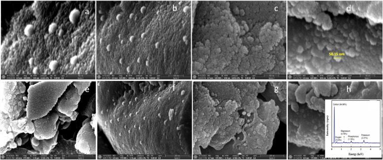
X-ray diffraction (XRD) analysis of MK9 (Fig. 5a) reveals a broad amorphous (002) peak at 2θ ≈ 25°, corresponding to a d-spacing between graphene sheets of 3.5 Å, and a (100) peak at 43°, relating to the in-plane graphitic structure. Raman spectroscopy was performed to investigate the structural characteristics and degree of graphitization of the synthesized MK9 carbon material (Fig. 5b).
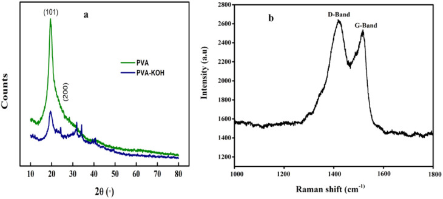
The Raman spectrum displayed two prominent peaks: the D-band around ∼1387 cm−1, which corresponds to disordered carbon or defects in the carbon structure, and the G-band around ∼1532 cm−1, which is associated with the graphitic sp2-hybridized carbon domains. Indicating a partially graphitized structure with a balanced presence of ordered and disordered carbon regions. This structural feature is beneficial for super capacitor applications, as the graphitic domains enhance electrical conductivity, while the disordered regions contribute to ion adsorption and charge storage.
X-ray photoelectron spectroscopy (XPS) analysis of MK9 reveals key insights into their surface chemistry and elemental composition. Fig. 6 shows the XPS wide scan spectra of the MK9 sample, containing two prominent peaks corresponding to carbon (binding energy of 284.75 eV) and oxygen (binding energy of 530.89 eV). The primary feature of the XPS spectrum is the intense carbon (C 1s) peak shown in Fig. 6b, which can be deconvoluted into several components, corresponding to different carbon species present on the surface of the nanospheres such as C <svg xmlns="http://www.w3.org/2000/svg" version="1.0" width="13.200000pt" height="16.000000pt" viewBox="0 0 13.200000 16.000000" preserveAspectRatio="xMidYMid meet"><metadata> Created by potrace 1.16, written by Peter Selinger 2001-2019 </metadata><g transform="translate(1.000000,15.000000) scale(0.017500,-0.017500)" fill="currentColor" stroke="none"><path d="M0 440 l0 -40 320 0 320 0 0 40 0 40 -320 0 -320 0 0 -40z M0 280 l0 -40 320 0 320 0 0 40 0 40 -320 0 -320 0 0 -40z"/></g></svg> O, C–O–C, C–C, C <svg xmlns="http://www.w3.org/2000/svg" version="1.0" width="13.200000pt" height="16.000000pt" viewBox="0 0 13.200000 16.000000" preserveAspectRatio="xMidYMid meet"><metadata> Created by potrace 1.16, written by Peter Selinger 2001-2019 </metadata><g transform="translate(1.000000,15.000000) scale(0.017500,-0.017500)" fill="currentColor" stroke="none"><path d="M0 440 l0 -40 320 0 320 0 0 40 0 40 -320 0 -320 0 0 -40z M0 280 l0 -40 320 0 320 0 0 40 0 40 -320 0 -320 0 0 -40z"/></g></svg> C groups, which are associated with binding energies in the range of 282–290 eV respectively. The O 1s peak observed in the XPS spectrum, as shown in Fig. 6c, indicates the presence of oxygen-containing surface functionalities, specifically bonds like C <svg xmlns="http://www.w3.org/2000/svg" version="1.0" width="13.200000pt" height="16.000000pt" viewBox="0 0 13.200000 16.000000" preserveAspectRatio="xMidYMid meet"><metadata> Created by potrace 1.16, written by Peter Selinger 2001-2019 </metadata><g transform="translate(1.000000,15.000000) scale(0.017500,-0.017500)" fill="currentColor" stroke="none"><path d="M0 440 l0 -40 320 0 320 0 0 40 0 40 -320 0 -320 0 0 -40z M0 280 l0 -40 320 0 320 0 0 40 0 40 -320 0 -320 0 0 -40z"/></g></svg> O and O–C <svg xmlns="http://www.w3.org/2000/svg" version="1.0" width="13.200000pt" height="16.000000pt" viewBox="0 0 13.200000 16.000000" preserveAspectRatio="xMidYMid meet"><metadata> Created by potrace 1.16, written by Peter Selinger 2001-2019 </metadata><g transform="translate(1.000000,15.000000) scale(0.017500,-0.017500)" fill="currentColor" stroke="none"><path d="M0 440 l0 -40 320 0 320 0 0 40 0 40 -320 0 -320 0 0 -40z M0 280 l0 -40 320 0 320 0 0 40 0 40 -320 0 -320 0 0 -40z"/></g></svg> O. This peak reflects the surface oxygen content, which plays a crucial role in determining the surface chemistry of the material. In some cases, trace amounts of nitrogen (N) may also be identified near 398 eV in the wide scan, likely originating from residual components in the mango kernel, with varying percentages. The comparative intensities of the C 1s and O 1s peaks offer insight into the surface carbon-to-oxygen ratio, an important factor in evaluating the chemical reactivity of the synthesized material and its potential utility in fields like adsorption, catalysis, and energy storage.
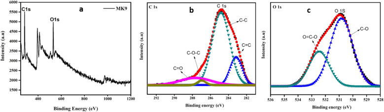
Electrochemical measurements were carried out using an AUTOLAB M204 multichannel potentiostat/galvanostat (Netherlands). In the three-electrode setup, CV and GCD tests were performed within a potential range of 0 to −1.0 V. Similar CV and GCD analyses were conducted on the asymmetric device using a potential window of 0 to 1.4 V. All measurements were conducted in 3.0 M KOH and PVA-KOH gel electrolytes.
Eqn (1) was used to determine the gravimetric specific capacitance (C) for the electrodes in a three-electrode cell;26
1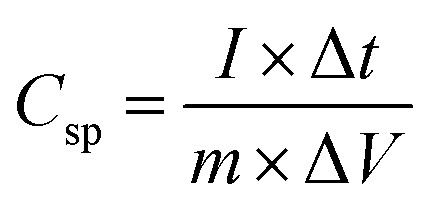
in this equation, I represents the constant discharge current (A), Δt is the discharge duration (s), V denotes the voltage difference (V), and m refers to the total mass of the active material used.
2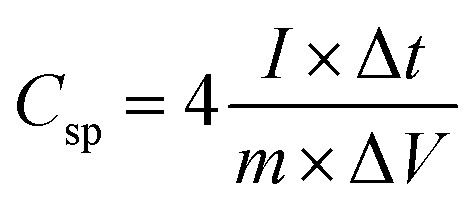
Likewise, eqn (2) was applied to calculate the gravimetric specific capacitance (C) for asymmetric supercapacitors.
Here, Csp represents the specific capacitance (F g−1), m is the total mass of ZS/GP active material (g), I denotes the constant discharge current (A), Δt is the discharge duration (s), and ΔV is the voltage difference (V).
Eqn (3) and (4) are utilized to calculate the actual energy performance parameters of the devices, specifically the energy density (E) and power density (P).
3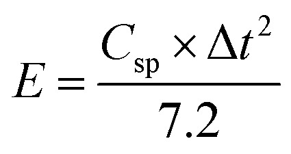
4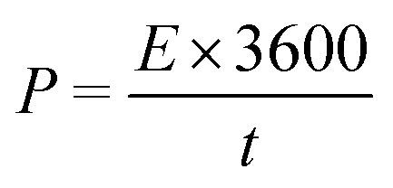
The CV with a larger area shows that MK9 seems to hold more charges than its peers (Fig. 7a). The more or less rectangular profiles on all the electrodes demonstrate the viability of MK7, MK8, MK9, and MK10 as EDLC materials. GCD testing demonstrated a triangular and linear profile, both indicative of EDLC behavior27 shown in Fig. 7b. The MK9 displayed longer discharge times, leading to better specific capacitance. It displayed a high specific capacitance of 205.8 F g−1 compared to MK7, MK8, and MK10, which displayed 107.9, 124.9, and 132.2 F g−1, respectively. The FRA impedance of the MK electrodes is revealed by EIS analysis. All the MK electrodes showed very low impedance. An equivalent circuit was created to simulate the phenomena seen in the EIS analysis (inset in Fig. 7d). The series resistance shows the internal resistance of the solution with the lowest Rct value recorded at 0.41 Ω and series resistance 0.4 Ω for the MK9 electrode, shown in Table 2. Because pyrolysis at 900 °C results in lower charge transfer resistance due to improved conductivity, higher porosity, and the presence of more active defect sites. In contrast, other temperatures lead to higher temperatures due to excessive graphitization, reduced porosity, and decreased surface functional groups.
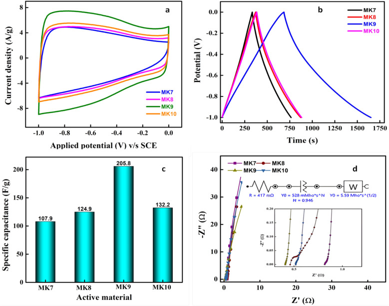
| Electrode | R s (Ω) | CPE(Q)/Ω sN | C (mF) | W (Ω s1/2) | χ 2 |
|---|---|---|---|---|---|
| MK7 | 0.8 | 0.423 (N = 0.98) | 434 | 4.51 | 0.06 |
| MK8 | 0.47 | 0.452 (N = 0.99) | 460 | 2.21 | 0.03 |
| MK9 | 0.4 | 0.694 (N = 0.94) | 672 | 5.58 | 0.02 |
| MK10 | 0.5 | 0.528 (N = 1.0) | 593 | 1.45 | 0.07 |
Capacitive current due to the electrochemical double layer, denoted by the double-layer capacity Cdl, and Faraday current due to an electrochemical reaction, denoted by the charge transfer resistance RCT, are both ways in which current can flow across the interface of the working electrode. As with the streamlined Randle's circuit, the projected EIS would be a semicircle up to this point. Capacitance is measured in units of constant phase element (CPE) rather than Cdl. MK7 electrode shows the semicircle at high frequencies (inset in Fig. 7d). Meanwhile, we see a vertical line for the others, ruling out Faraday current or charge transfer resistance. This corresponds perfectly to the form seen in the CV. That points to a species that is freely diffusing at the electrode. Because of the prolonged application of potentials at low frequencies, species depletion in the vicinity of the electrode becomes an issue. While the applied voltage remains the same, fewer species are converted, and less current flows when fewer species are in the electrode and the sample gap. This increase in impedance is what gets recorded during an EIS test. The Warburg impedance (W), a fictitious electrical component that appears solely in comparable circuits for electrochemical research, stands in for this rise. Nyquist plots reveal the Warburg impedance as a straight line at 45° to the abscissa. The depletion has a pronounced impact on the impedance at lower frequencies. Because of the reduced diffusion resistance, this line is less noticeable in MK electrodes.
Aqueous electrolytes, such as KOH aqueous solution, offer several advantages over their organic counterparts, including higher ionic conductivity, lower cost, non-flammability, non-corrosiveness, enhanced safety, and ease of air assembly. However, a key limitation of aqueous electrolytes is their narrower potential window (approximately 1.2 V), which results in lower energy density and consequently restricts their widespread application. In symmetric supercapacitors, incorporating redox-active materials within the aqueous electrolyte can mitigate this issue by introducing additional redox interactions between the electrode and electrolyte, effectively increasing capacitance. Conversely, organic electrolytes often exhibit lower conductivity and higher cost, flammability, and toxicity, and offer a significantly wider operating voltage (up to 4 V). This wider potential window is a significant advantage, contributing to higher energy density. Commonly employed organic electrolyte solvents include acetonitrile (AN) and propylene carbonate (PC), while organic salts such as tetraethylphosphonium tetrafluoroborate and tetraethylammonium tetrafluoroborate (TEABF4) are also utilized in some organic electrolyte systems.
Organic electrolytes often operate in a greater potential window, between 2.5 and 2.8 V, as shown in Fig. 8b. Energy and power densities may be significantly improved with the higher operating cell voltage.28 In an EDLC, both pore size and pore size distribution and specific surface area influence the specific capacitance. The accessibility of pores in an organic electrolyte is directly affected by the size of the cation and anion species and the interaction between ions and the solvent. Very tiny carbon particles may have a higher specific surface area if pores are present in the material, but this may come at the expense of the ability of a material to transport electrolyte ions. Because the pores are so tiny, more prominent organic ions have a more challenging time accessing the surface, which has a detrimental impact on specific capacitance. Therefore, achieving optimal specific capacitance necessitates a close match between the pore size of the carbon materials and the size of the electrolyte ions. We decided to use a TEABF4 solution in acetonitrile (AN) as the electrolyte. With a conductivity of 49 mS cm−1, TEABF4 in AN solvent is among the best of its class.28
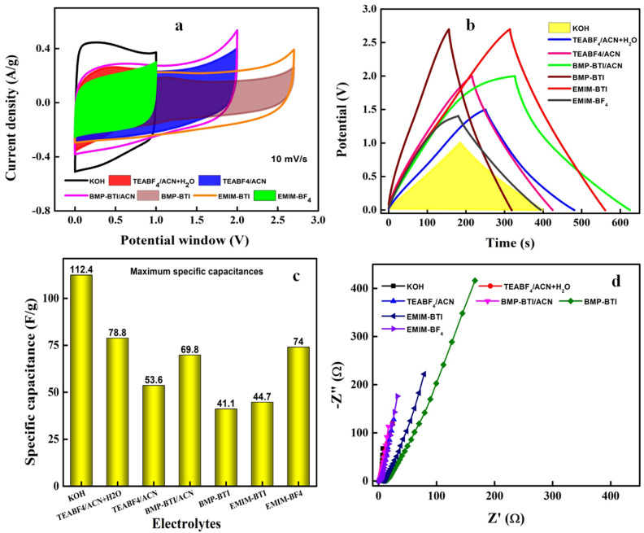
Since MK9 had a favourable electrochemical response in a three-electrode configuration, this material was selected for fabricating the cells and tested with different electrolytes to increase the device performance, as shown in Fig. 8. Benefits of organic solvents include a high dielectric constant, low volatility, and superior electrochemical stability. Organic electrolytes in supercapacitors can be costly and present safety concerns because organic solvents are flammable and volatile. Distinct CR2032 cells with MK9 symmetric electrodes with 6 different electrolytes were used to analyse the electrochemical response. CV analysis indicated that the cell with KOH electrolyte had a more stable and broader electrochemical window than other organic electrolytes (Fig. 8a). While the EMIM-BTI and BMP-BTI were able to operate reliably up to 3.0 V, the BMP-BTI AN and TEABF4/AN window was just 2.0 V. The greater CV area displayed by cells with KOH electrolyte indicated that the cells could store charges efficiently. A similar result was seen in GCD analysis with symmetric linear curves (Fig. 8b). While the cell with the KOH electrolyte had the highest specific capacitance 112.4 F g−1, despite running at 3.0 V, the cell with BMP-BTI displayed a low specific capacitance of just 41.1 F g−1 (Fig. 8c). Although ILs allow for a larger voltage window to be used, many of them have significant limitations that make them impractical. These include their high viscosity, limited ionic conductivity, and high cost. Despite having a higher ionic conductivity than most typical ILs, the EMIM-BF4 electrolyte (14 mS cm−1 at 25 °C) conductivity is still much lower than that of TEABF4/AN (59.9 mS cm−1 at 25 °C), and 5.0 M aqueous KOH (600 mS cm−1 at 25 °C).29–31
The FRA impedance of the KOH electrolyte-based cell shows a proper semicircle arc compared to the other electrolytes. Rs and Rct values are 0.83 and 2.8 Ω, respectively. The EMIM-BF4 and BMP-BTI ACN electrolyte-filled cells displayed nominal resistance (Fig. 8d), with Rs values of 1.13 and 1.52 Ω, respectively. The BMP-BTI cell exhibited Rs of 7.236 Ω, in contrast. KOH is a strong electrolyte that fully dissociates into K+ and OH− ions in both aqueous and molten states. Its aqueous solution conducts electricity effectively due to the abundance of free ions. Any compound completely dissociating in an aqueous solution is classified as a strong electrolyte.
Electrolytes, including aqueous (KOH), organic (TEABF4-ACN), and ionic liquids (EMIM-BF4, BMP-BTI, and EMIM-BTI) were used to create symmetric supercapacitors using MK9 as the active material. While using a KOH electrolyte, the specific capacitance reached 112.4 F g; however, extending operating voltages is necessary if the cell is employed in a wide range of applications and the energy density is to be increased; this cannot be done in an aqueous environment. We found that a voltage of 3.0 V could be maintained across the supercapacitor cell when EMIM-BTI was used as the electrolyte.
Fig. 9a presents the Bode plot, illustrating the frequency dependence of both phase angle (Φ) and impedance modulus (Z). Nyquist plots, commonly presented with equal scaling on both x and y axes, are used to assess impedance behaviour over a frequency range from 105 Hz (high-frequency) to 10−2 Hz (low-frequency).
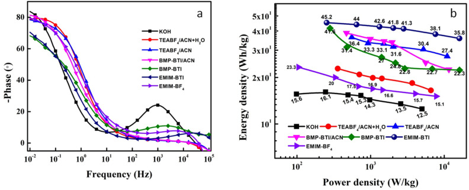
The equivalent series resistance (ESR) is identified at the point where the impedance curve intersects the x-axis in the high-frequency region. For the cell using KOH aqueous electrolyte, the phase angle measured was approximately −84°, which is fairly close to the ideal capacitor value of −90°. This suggests near-ideal capacitive behaviour. However, the BMP-BTI organic electrolyte decreased the phase angle to −68° (Fig. 9a), indicating a deviation from ideal capacitance. The closer proximity to −90° observed with the aqueous KOH electrolyte and biomass-derived porous carbon likely arises from the superior ionic conductivity of the aqueous electrolyte and the efficient charge transfer facilitated by the inherent porous structure and surface functionalities of the biomass-derived CNS. These characteristics promote better ion accessibility and minimize diffusion limitations, leading to more ideal capacitive behaviour. In contrast, despite its wider potential window, the organic electrolyte may exhibit lower ionic conductivity and potentially less favourable interactions with the CNS material, resulting in a less ideal phase angle. A comparative summary is summarized in (Table 3) with key energy parameters of various biomass derived carbon based electrodes with those obtained in the present study.
| Precursor | Electrolyte | Voltage (V) | Energy density (W h kg−1) | Power density (W kg−1) | Specific capacitance (F g−1) | Ref. |
|---|---|---|---|---|---|---|
| Corn silks | MeEt3NBF4/PC | 2.7 | 16.4 | — | — | 32 |
| Lignin | Lignin-hydrogel | 1.0 | 4.49 | 263 | 129.23 | 33 |
| Areca palm leaves | PVA-Li2SO4 | 1.5 | 10.3 | 375 | 132 | 34 |
| Pine cone | PVA-KOH | 1.6 | 24.6 | 400 | 69 | 35 |
| Recycled jute | KOH | 0.9 | 21.0 | 182 | 51 | 36 |
| Cherry blossom petals | H3PO4-PVA | 1.0 | NA | NA | 154 | 37 |
| Quinoa | 6.0 M KOH | 1.0 | 9.5 | — | — | 38 |
| Seaweed | C2H3LiO2 | 1.8 | 0.835 mW h cm−2 | 2.25 mW cm−2 | 185.7 mF cm−2 | 39 |
| Teak wood sawdust | PVA/KOH | 1.7 | 27.1 | 178 | 67.2 | 40 |
| 1.0 M KOH | 1.3 | 20.5 | 148 | 75.2 | ||
| Platanus bark | TEABF4-ACN | 3.0 | 34.6 | — | — | 41 |
| Mango kernels | 3.0 M KOH | 1.2 | 12.32 | 5137 | 112.4 | Present work |
While using a KOH electrolyte, the specific capacitance reached 112.4 F g−1. However, extending operating voltages is necessary if the cell is employed in a wide range of applications and the energy density is to be increased. We found that a voltage of 3.0 V could be maintained across the supercapacitor cell when EMIM-BTI was used as the electrolyte. Although the capacitance decreased to 46 F g−1, an impressive energy density of 44.78 W h kg−1 was achieved at a power density of 249 W kg−1. Comparative tests between the fabricated cells and commercial supercapacitors revealed an outstanding electrochemical performance. Additionally, the coin cell using KOH as the electrolyte demonstrated an energy density of 12.32 W h kg−1 with a peak power density of 5137.86 W kg−1, as shown in Fig. 8b. The electrochemical performance of typical supercapacitors could withstand 100 000 GCD cycles without significantly deteriorating their electrochemical performance. The manufactured cell also supplied enough energy to light a red LED (1.9 V) for around 15 minutes.
The viability and durability of MK9-CR2032 cells were evaluated. At 2.0 A g−1, a cell with an aqueous electrolyte was put through 100 000 GCD cycles. Up until 66 000 cycles, the cell maintained a stunning coulombic efficiency of 100%. After that, we noticed a slow fall to 79.3% at the end of 100 000 cycles (Fig. 10a). Additionally, the efficiency of the cells with various electrolytes was compared. While the performance of the other electrolytes fluctuated, aqueous electrolyte efficiency remained constant. This emphasizes the need to select electrolytes with low viscosity and good conductivity. It is much simpler for EDL to develop when ionic mobility is high (as it is in water). This leads to improved Coulomb efficiency (Fig. 9a). After only ten minutes of charging at 1.0 A g−1, a CR2032 cell could power a red LED light for 15 minutes (Fig. 10a, inset).
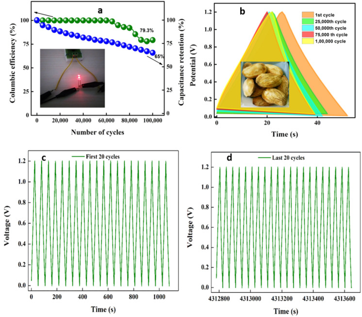
Fig. 10c and d shows the first and last 20 GCD cycles of the device. There is a natural decrease in capacitance retention over cycles; however, because capacitance retention has decreased, it need not imply that charge/discharge efficiency also has to decrease. Hence, the graph presents 100% reliable results. Total time taken for completion of 100 000 GCD cycles at 2 A g−1 was 49 days, 22 hours, 14 minutes, and 3 seconds.
Porous nanostructures were synthesized without using templates, catalysts, or activating agents; temperatures between 700 and 1000 °C from biomass sources. Maximum specific surface area by BET method was obtained when Mangifera indica kernels pyrolyzed at 900 °C was 1348.5 m2 g−1. A CR2032-type symmetric supercapacitor was assembled utilizing different electrolytes. The effects of different electrolyte concentrations on capacitance and charge storage processes were also investigated. The KOH electrolyte-based coin cell was stable for 100 000 GCD cycles and has a maximum power density of 5137.86 W kg−1, with an energy density of 12.32 W h kg−1, and a Csp of 112.4 F g−1. Furthermore, the generated cell supplied sufficient energy for the illumination of a red LED for around 15 minutes. These results indicate that excellent potential of MK materials obtained from mango kernel wastes for high-performance supercapacitor applications.
Future research can explore the incorporation of heteroatom doping, such as nitrogen, sulphur, or phosphorus, to further enhance the capacitive behaviour and electrical conductivity of the mango kernel-derived carbon. Additionally, developing hybrid electrodes by combining the porous carbon with metal oxides or conducting polymers may significantly improve overall energy and power densities. Investigating alternative electrolytes, including ionic liquids or solid-state gel polymer electrolytes, could expand the operating voltage window and enable the fabrication of flexible or wearable super capacitor devices. Scaling up the synthesis process and integrating the material into full-cell super capacitor prototypes will be essential for assessing real-world applicability and device-level performance. Furthermore, conducting a detailed life cycle assessment (LCA) would provide insight into the environmental advantages of this biomass-derived material over conventional electrode materials. Finally, applying similar synthesis strategies to other agricultural wastes could diversify sustainable sources for high-performance carbon materials, further advancing green energy storage technologies.
The data supporting this article has been included as part of the article.
There are no conflicts to declare.
Molahalli V., Shetty A., Bijapur K., Soman G., Sharma A., Joseph J. and Hegde G., in Green Energy and Technology, Springer Nature Singapore, Singapore, 2023, pp. 1–39
Aghmadi A. Mohammed O. A. Batteries. 2024;10:141. doi: 10.3390/batteries10040141.
Mwaurah P. W. Kumar S. Kumar N. Panghal A. Attkan A. K. Singh V. K. Garg M. K. Compr. Rev. Food Sci. Food Saf. 2020;19:2421–2446. doi: 10.1111/1541-4337.12598.
Stambouli A. B. Traversa E. Renewable Sustainable Energy Rev. 2002;6:433–455. doi: 10.1016/S1364-0321(02)00014-X.
Molahalli V. Chaithrashree K. Singh M. K. Agrawal M. Krishnan S. G. Hegde G. J. Energy Storage. 2023;70:108062. doi: 10.1016/j.est.2023.108062.
Veeresh S. Ganesh H. Nagaraju Y. S. Vandana M. Ashokkumar S. P. Vijeth H. Prasad M. V. N. A. Devendrappa H. Diamond Relat. Mater. 2021;114:108289. doi: 10.1016/j.diamond.2021.108289.
J Villora-Picó J. González-Arias J. Baena-Moreno F. M. Reina T. R. Materials. 2024;17:565. doi: 10.3390/ma17030565.
Molahalli V. Sharma A. Bijapur K. Soman G. Chattham N. Hegde G. Mater. Today Commun. 2024;38:108034. doi: 10.1016/j.mtcomm.2024.108034.
Liu X. Xue L. Lu Y. Xia Y. Li Q. J. Electroanal. Chem. 2020;862:114006. doi: 10.1016/j.jelechem.2020.114006.
Borchardt L. Oschatz M. Kaskel S. Mater. Horiz. 2014;1:157–168. doi: 10.1039/C3MH00112A.
Sakintuna B. Yürüm Y. Ind. Eng. Chem. Res. 2005;44:2893–2902. doi: 10.1021/ie049080w.
Vix-Guterl C. Frackowiak E. Jurewicz K. Friebe M. Parmentier J. Béguin F. Carbon. 2005;43:1293–1302. doi: 10.1016/j.carbon.2004.12.028.
Gege H. Wu X. Hou Y. Cai J. Biomass Convers. Biorefin. 2020;10:267–276. doi: 10.1007/s13399-019-00412-6.
S Wong C. D. Yeoh J. X. Wu T. Manickam S. Pang C. H. Chem. Eng. Process. 2022;175:108908. doi: 10.1016/j.cep.2022.108908.
Molahalli V. Soman G. Bhat V. S. Jyothi M. S. Sirimahachai U. Maradur S. De Padova P. Chattham N. Hegde G. Nano Express. 2024;5:035006. doi: 10.1088/2632-959X/ad64f0.
Choi I. S. Cho E. J. Moon J. H. Bae H. J. Food Chem. 2015;188:537–542. doi: 10.1016/j.foodchem.2015.05.028.
Sharma A. Shivanna J. M. Alodhayb A. N. Hegde G. Nanoscale Adv. 2024;6:3199–3210. doi: 10.1039/D4NA00254G.
H Paramesh S. Ananthpur V. S. Rajendraprasad N. J. Water Environ. Nanotechnol. 2024;9:55–72.
Darabi J. Ghiasvand A. Haddad P. R. Talanta. 2021;233:122583. doi: 10.1016/j.talanta.2021.122583.
Devi M. S. Thangadurai T. D. Shanmugaraju S. Selvan C. P. Lee Y. I. Adsorption. 2024;30:891–913. doi: 10.1007/s10450-024-00458-7.
Shang T. Xu Y. Li P. Han J. Wu Z. Tao Y. Yang Q.-H. Nano Energy. 2020;70:104531. doi: 10.1016/j.nanoen.2020.104531.
Diarra S. S. World Poult. Sci. J. 2014;70:279–288. doi: 10.1017/S0043933914000294.
Punia Bangar S. Kumar M. Whiteside W. S. Int. J. Biol. Macromol. 2021;183:1807–1817. doi: 10.1016/j.ijbiomac.2021.05.157.
Tesfaye T. Johakimu J. K. Chavan R. B. Sithole B. Ramjugernath D. Clean Technol. Environ. Policy. 2018;20:81–94. doi: 10.1007/s10098-017-1457-3.
Awodi P. S. Ogbonna J. C. Nwagu T. N. Heliyon. 2022;8:e09707. doi: 10.1016/j.heliyon.2022.e09707.
Soman G. Molahalli V. Sayeed K. Pandey K. Kulkarni B. B. Hegde G. J. Energy Storage. 2025;111:115373. doi: 10.1016/j.est.2025.115373.
Molahalli V. Soman G. Bhat V. S. Shetty A. Alodhayb A. Hegde G. RSC Adv. 2024;14:32314–32326. doi: 10.1039/D4RA05340K.
Zhong C. Deng Y. Hu W. Qiao J. Zhang L. Zhang J. Chem. Soc. Rev. 2015;44:7484–7539. doi: 10.1039/C5CS00303B.
Galiński M. Lewandowski A. Stępniak I. Electrochim. Acta. 2006;51:5567–5580. doi: 10.1016/j.electacta.2006.03.016.
Gilliam R. Graydon J. Kirk D. Thorpe S. Int. J. Hydrogen Energy. 2007;32:359–364. doi: 10.1016/j.ijhydene.2006.10.062.
Armand M. Endres F. MacFarlane D. R. Ohno H. Scrosati B. Nat. Mater. 2009;8:621–629. doi: 10.1038/nmat2448.
Zhou J. Yuan S. Lu C. Yang M. Song Y. J. Electroanal. Chem. 2020;878:114704. doi: 10.1016/j.jelechem.2020.114704.
Park J. H. Rana H. H. Lee J. Y. Park H. S. J. Mater. Chem. A. 2019;7:16962–16968. doi: 10.1039/C9TA03519B.
Le P.-A. Nguyen V.-T. Sahoo S. K. Tseng T. Y. Wei K.-H. J. Mater. Sci. 2020;55:10751–10764. doi: 10.1007/s10853-020-04693-5.
Barzegar F. Bello A. Dangbegnon J. K. Manyala N. Xia X. Appl. Energy. 2017;207:417–426. doi: 10.1016/j.apenergy.2017.05.110.
Zequine C. Ranaweera C. K. Wang Z. Dvornic P. R. Kahol P. K. Singh S. Tripathi P. Srivastava O. N. Singh S. Gupta B. K. Gupta G. Gupta R. K. Sci. Rep. 2017;7:1174. doi: 10.1038/s41598-017-01319-w.
Yu X. Wang Y. Li L. Li H. Shang Y. Sci. Rep. 2017;7:45378. doi: 10.1038/srep45378.
Sun Y. Xue J. Dong S. Zhang Y. An Y. Ding B. Zhang T. Dou H. Zhang X. J. Mater. Sci. 2020;55:5166–5176. doi: 10.1007/s10853-019-04343-5.
Ye T. Li D. Liu H. She X. Xia Y. Zhang S. Zhang H. Yang D. Macromolecules. 2018;51:9360–9367. doi: 10.1021/acs.macromol.8b01955.
Bhat V. S. Krishnan S. G. Jayeoye T. J. Rujiralai T. Sirimahachai U. Viswanatha R. Khalid M. Hegde G. J. Mater. Sci. 2021;56:13271–13290. doi: 10.1007/s10853-021-06154-z.
Yu F. Ye Z. Chen W. Wang Q. Wang H. Zhang H. Peng C. Appl. Surf. Sci. 2020;507:145190. doi: 10.1016/j.apsusc.2019.145190.
The data supporting this article has been included as part of the article.